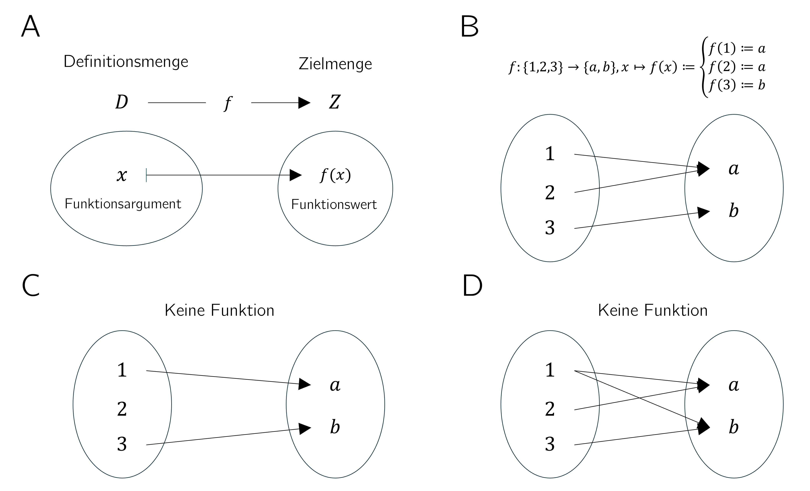
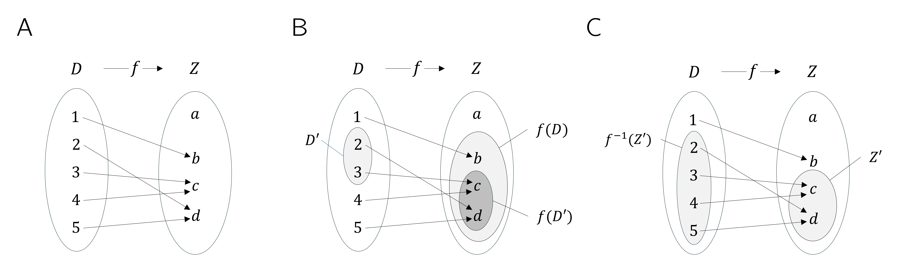
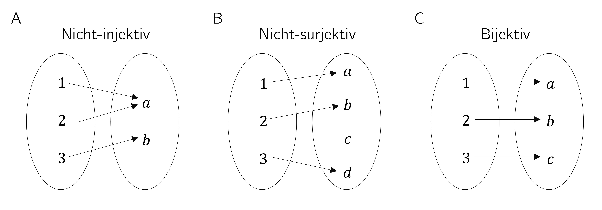
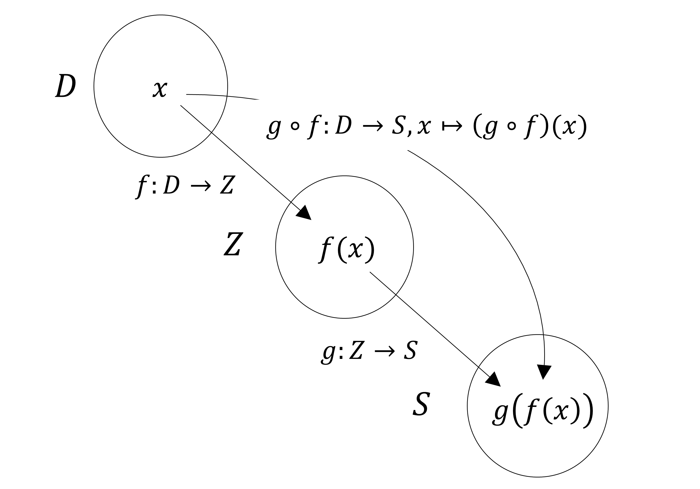
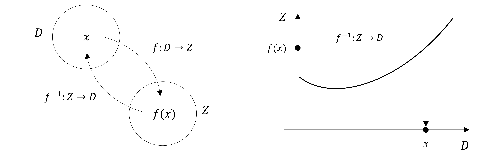

5 Functions
Funktionen bilden neben den Mengen den zweiten Grundpfeiler der modernen Mathematik. In dieser Einheit definieren wir den Begriff der Funktion, führen erste Eigenschaften von Funktionen ein und geben eine Übersicht über einige elementare Funktionen.
5.1 Definition und Eigenschaften
Definition 5.1 (Funktion) Eine Funktion oder Abbildung \(f\) ist eine Zuordnungsvorschrift, die jedem Element einer Menge \(D\) genau ein Element einer Menge \(Z\) zuordnet. \(D\) wird dabei Definitionsmenge von \(f\) und \(Z\) wird Zielmenge von \(f\) genannt. Wir schreiben \[\begin{equation} f : D \to Z, x \mapsto f(x), \end{equation}\] wobei \(f : D \to Z\) gelesen wird als “die Funktion \(f\) bildet alle Elemente der Menge \(D\) eindeutig auf Elemente in \(Z\) ab” und \(x \mapsto f(x)\) gelesen wird als “\(x\), welches ein Element von \(D\) ist, wird durch die Funktion \(f\) auf \(f(x)\) abgebildet, wobei \(f(x)\) ein Element von \(Z\) ist”. Der Pfeil \(\to\) steht für die Abbildung zwischen den Mengen \(D\) und \(Z\), der Pfeil \(\mapsto\) steht für die Abbildung zwischen einem Element von \(D\) und einem Element von \(Z\).
Es ist zentral, zwischen der Funktion \(f\) als Zuordnungsvorschrift und einem Wert der Funktion \(f(x)\) als Element von \(Z\) zu unterscheiden. \(x\) ist das Argument der Funktion (der Input der Funktion), \(f(x)\) der Wert, den die Funktion \(f\) für das Argument \(x\) annimmt (der Output der Funktion). Üblicherweise folgt in der Definition einer Funktion \(f(x)\) die Definition der funktionalen Form von \(f\), also einer Regel, wie aus \(x\) der Wert \(f(x)\) zu bilden ist. Zum Beispiel wird in folgender Definition einer Funktion \[\begin{equation} f : \mathbb{R} \to \mathbb{R}_{\ge 0}, x \mapsto f(x) := x^2 \end{equation}\] die Definition der Potenz genutzt. Man beachte, dass Funktionen immer eindeutig sind, das heißt, dass sie jedem \(x \in D\) bei jeder Anwendung der Funktion immer ein und dasselbe \(f(x) \in Z\) zuordnen.
Figure 5.1 visualisiert einige Aspekte der Funktionsdefinition. Figure 5.1 A stellt dabei zunächst die zentralen Begriffe der Funktionsdefinition bildlich dar. Figure 5.1 B visualisiert ein erstes Beispiel für eine Funktion, bei der die den Argumenten zugeordneten Funktionswerte nicht durch eine Rechenregel, sondern durch direkte Definition bestimmt sind. Figure 5.1 C und Figure 5.1 D bedienen sich der Bildsprache, um zwei Aspekte der Definition von Funktionen mithilfe von Gegenbeispielen hervorzuheben: Bei der Zeichnung in Figure 5.1 C handelt es sich nicht um die Darstellung einer Funktion, da nach Definition 5.1 eine Funktion jedem Element einer Menge \(D\) genau ein Element einer Zielmenge \(Z\) zuordnet. Die hier angedeutete Zuordnungsvorschrift ordnet dem Element \(2 \in D\) aber kein Element in \(Z\) zu und ist deshalb keine Funktion. Gleichsam gilt nach Definition 5.1, dass eine Funktion jedem Element einer Menge \(D\) genau ein Element einer Zielmenge \(Z\) zuordnet. Die in Figure 5.1 D angedeutete Zuordnungsvorschrift ordnet \(1 \in D\) aber sowohl das Element \(a \in Z\) als auch das Element \(b \in Z\) zu und ist deshalb mit Definition 5.1 nicht vereinbar.

Funktionen setzen also Elemente von Mengen miteinander in Beziehung. Die Mengen dieser Elemente erhalten spezielle Bezeichnungen.
Definition 5.2 (Bildmenge, Wertebereich, Urbildmenge, Urbild) Es sei \(f : D \to Z, x \mapsto f(x)\) eine Funktion und es seien \(D' \subseteq D\) und \(Z' \subseteq Z\). Die Menge \[\begin{equation} f(D') := \{z \in Z| \mbox{Es gibt ein } x \in D' \mbox{ mit } z = f(x)\} \end{equation}\] heißt die Bildmenge von \(D'\) und \(f(D) \subseteq Z\) heißt der Wertebereich von \(f\). Weiterhin heißt die Menge \[\begin{equation} f^{-1}(Z') := \{x \in D | f(x) \in Z'\} \end{equation}\] die Urbildmenge von \(Z'\). Ein \(x \in D\) mit \(z = f(x) \in Z\) heißt ein Urbild von \(z\).
Man beachte, dass der Wertebereich \(f(D)\) von \(f\) und die Zielmenge \(Z\) von \(f\) nicht notwendigerweise identisch sein müssen.
Beispiel
Um die in Definition 5.2 eingeführten Begriffe zu verdeutlichen, betrachten wir die in Figure 5.2 A dargestellte Funktion \[ f:\{1,2,3,4,5\} \to \{a,b,c,d\}, x \mapsto f(x) := \begin{cases} f(1) := b \\ f(2) := d \\ f(3) := c \\ f(4) := c \\ f(5) := d \end{cases}. \tag{5.1}\] Nach Definition 5.2 ist eine Bildmenge immer bezüglich einer Teilmenge \(D'\) der Definitionsmenge \(D\) definiert. Sei also wie in Figure 5.2 B dargestellt \(D' := \{2,3\}\subset D\). Dann ist die Bildmenge von \(D'\) die Menge der \(z \in Z\), für die ein \(x \in D'\) existiert, sodass \(z = f(x)\). Diejenigen \(z \in Z\) für die ein \(x \in D'\) mit \(z = f(x)\) existiert sind aber hier gerade \(c,d\in Z\), da \(f(2) = d\) und \(f(3) = c\). Darüber hinaus gibt es keine \(z \in Z\) mit \(f(x) = z\) und \(x \in \{2,3\}\). Der Wertebereich \(f(D)\) ist nach Definition 5.2 die Teilmenge der \(z \in Z\), für die gilt, dass ein \(x \in D\) existiert, für das \(z = f(x)\) ist. Dies ist für alle Elemente von \(Z\) der Fall, außer für \(a \in Z\), da für dieses kein \(x \in D\) existiert mit \(a = f(x)\). Der Wertebereich von \(f\) ist für die betrachtete Funktion also durch \(f(D) := \{b,c,d\}\) gegeben.
Umgekehrt ist nach Definition 5.2 eine Urbildmenge immer bezüglich einer Teilmenge \(Z'\) der Zielmenge \(Z\) definiert. Sei also wie in Figure 5.2 C dargestellt \(Z' := \{c,d\}\subset Z\). Dann ist die Urbildmenge von \(Z'\) die Menge der \(x \in D\), für die gilt, dass \(f(x) \in Z'\). Diejenigen Elemente von \(D\), deren Funktionswerte unter \(f\) durch Elemente von \(Z'\) gegeben sind, sind gerade \(\{2,3,4,5\}\). \(1 \in D\) dagegen ist kein Element von \(Z'\), da \(f\) \(1 \in D\) auf \(b \in Z\) abbildet und \(b \notin Z'\). Nichtsdestotrotz ist natürlich \(1 \in D\) ein Urbild von \(b\).

Grundlegende Eigenschaften von Funktionen werden in folgender Definition benannt.
Definition 5.3 (Injektivität, Surjektivität, Bijektivität) \(f : D \to Z, x \mapsto f(x)\) sei eine Funktion. \(f\) heißt injektiv, wenn es zu jedem Bild \(z \in f(D)\) genau ein Urbild \(x \in D\) gibt. Äquivalent gilt, dass \(f\) injektiv ist, wenn aus \(x_1,x_2 \in D\) mit \(x_1 \neq x_2\) folgt, dass \(f(x_1) \neq f(x_2)\) ist. \(f\) heißt surjektiv, wenn \(f(D) = Z\) gilt, wenn also jedes Element der Zielmenge \(Z\) ein Urbild in der Definitionsmenge \(D\) hat. Schließlich heißt \(f\) bijektiv, wenn \(f\) injektiv und surjektiv ist. Bijektive Funktionen werden auch eineindeutige Funktionen (engl. one-to-one mappings) genannt.
Beispiele
Wir verdeutlichen Definition 5.3 zunächst anhand dreier (Gegen)Beispiele in Figure 5.3. Figure 5.3 A visualisiert dabei die nicht-injektive Funktion \[\begin{equation} f : \{1,2,3\} \to \{a,b\}, x \mapsto f(x) := \begin{cases} f(1) := a \\ f(2) := a \\ f(3) := b \end{cases}. \end{equation}\] Die Funktion ist nicht-injektiv, weil es zum Element \(a\) in der Bildmenge von \(f\) mehr als ein Urbild in der Definitionsmenge von \(f\) gibt, nämlich die Elemente \(1\) und \(2\). Figure 5.3 B visualisiert die nicht-surjektive Funktion \[\begin{equation} g : \{1,2,3\} \to \{a,b,c,d\}, x \mapsto g(x) := \begin{cases} g(1) := a \\ g(2) := b \\ g(3) := d \end{cases}. \end{equation}\] Die Funktion ist nicht surjektiv, weil das Element \(c\) in der Zielmenge von \(g\) kein Urbild in der Definitionsmenge von \(g\) hat. Figure 5.3 C schließlich visualisiert die bijektive Funktion \[\begin{equation} h : \{1,2,3\} \to \{a,b,c\}, x \mapsto h(x) := \begin{cases} h(1) := a \\ h(2) := b \\ h(3) := c \end{cases}. \end{equation}\] Zu jedem Element in der Zielmenge von \(h\) gibt es genau ein Urbild, die Funktion ist also injektiv und surjektiv und damit bijektiv.

Als weiteres Beispiel betrachten wir die Funktion \[\begin{equation} f : \mathbb{R} \to \mathbb{R}, x \mapsto f(x) := x^2 \end{equation}\] Diese Funktion ist nicht injektiv, weil z.B. für \(x_1 = 2 \neq -2 = x_2\) gilt, dass \(f(x_1) = 2^2 = 4 = (-2)^2 = f(x_2)\). Weiterhin ist \(f\) auch nicht surjektiv, weil z.B. \(-1 \in \mathbb{R}\) kein Urbild unter \(f\) hat. Schränkt man die Definitionsmenge von \(f\) allerdings auf die nicht-negativen reellen Zahlen ein, definiert man also die Funktion \[\begin{equation} \tilde{f} : [0,\infty[ \to [0,\infty[, x \mapsto \tilde{f}(x) := x^2, \end{equation}\] so ist \(\tilde{f}\) im Gegensatz zu \(f\) injektiv und surjektiv, also bijektiv.
Zur Überabzählbarkeit der reellen Zahlen
Wir wollen an dieser Stelle die Begriffe der Surjektivität und Bijektivität von Funktionen nutzen, um den Begriff der Überabzählbarkeit der reellen Zahlen noch etwas vertiefen (vgl. Section 4.2). Dieser besagt, dass es verschiedene Arten von Unendlichkeiten gibt, was zunächst sicherlich intuitiv nicht leicht zu fassen ist. Weiterhin sind manche Aspekte der Wahrscheinlichkeitstheorie so gefasst, dass sie der Überabzählbarkeit der reellen Zahlen Genüge tun, sodass zumindest ein grobes Verständnis dieser Eigenschaft zur Motivation mancher Spitzfindigkeiten der Wahrscheinlichkeitstheorie dienen kann. Speziell wollen wir an dieser Stelle das Cantorsche Diagonalargument (Cantor (1891), Gray (1994)) zur Überabzählbarkeit der reellen Zahlen grob skizzieren. Wir beginnen damit, zunächst festzuhalten, was vor dem Hintergrund der bijektiven Abbildungen mit einer endlichen und einer abzählbar unendlichen Menge gemeint sein soll.
Definition 5.4 Eine Menge \(M\) heißt endlich, wenn es eine bijektive Abbildung der Form \[\begin{equation} f:\mathbb{N}_n \to M \end{equation}\] auf die Elemente von \(M\) gibt. Weiterhin heißt eine Menge \(M\) abzählbar unendlich, wenn es eine bijektive Abbildung der Form \[\begin{equation} f:\mathbb{N} \to M \end{equation}\] gibt.
Im Falle einer endlichen Menge kann jedem Element der Menge also im Sinne einer bijektiven Abbildung eine natürliche Zahl mit maximalem Wert \(n < \infty\) zugeordnet werden. Im Falle einer abzählbar unendlichen Menge kann jedem Element der Menge im Sinne einer bijektiven Abbildung zumindest eine natürliche Zahl zugeordnet werden. Die Elemente dieser Mengen können also abgezählt werden.
Cantor (1891) zeigte nun, dass dies im Allgemeinen für die reellen Zahlen nicht zutrifft, dass also keine bijektive Abbildung zwischen den reellen Zahlen und den natürlichen Zahlen konstruiert werden kann und es somit mehr reelle Zahlen als natürliche Zahlen geben muss. Speziell kann man argumentieren, dass sogar das Intervall \([0,1]\) schon mehr reelle Zahlen enthält als es natürliche Zahlen gibt, dass also keine surjektive Funktion von \(\mathbb{N}\) nach \([0,1]\) konstruiert werden kann.
Das Argument von Cantor (1891) hat die folgende Form. Man nehme an, \(f : \mathbb{N} \to [0,1]\) sei eine injektive Funktion, die tabellarisch wie beispielsweise in Table 5.1 dargestellt sei.
| \(n\) | \(f(n)\) | ||||||||||
|---|---|---|---|---|---|---|---|---|---|---|---|
| \(1\) | 0. | 3 | 1 | 4 | 1 | 5 | 9 | 2 | 6 | 5 | \(\cdots\) |
| \(2\) | 0. | 8 | 9 | 4 | 5 | 9 | 7 | 8 | 1 | 0 | \(\cdots\) |
| \(3\) | 0. | 9 | 6 | 2 | 3 | 2 | 1 | 5 | 8 | 7 | \(\cdots\) |
| \(4\) | 0. | 5 | 3 | 6 | 8 | 8 | 8 | 9 | 7 | 3 | \(\cdots\) |
| \(5\) | 0. | 7 | 4 | 3 | 8 | 1 | 8 | 0 | 9 | 7 | \(\cdots\) |
| \(\vdots\) | \(\vdots\) |
Man konstruiere nun eine weitere Zahl in \([0,1]\) dadurch, dass man zu den fett gedruckten Diagonalelementen in Table 5.1 jeweils \(1\) addiert, wenn der entsprechende Wert kleiner als 9 ist und ansonsten den Wert auf 0 setzt. Dies ist in Table 5.2 gezeigt.
| \(n\) | \(f(n)\) | ||||||||||
|---|---|---|---|---|---|---|---|---|---|---|---|
| \(1\) | 0. | 4 | 1 | 4 | 1 | 5 | 9 | 2 | 6 | 5 | \(\cdots\) |
| \(2\) | 0. | 8 | 0 | 4 | 5 | 9 | 7 | 8 | 1 | 0 | \(\cdots\) |
| \(3\) | 0. | 9 | 6 | 3 | 3 | 2 | 1 | 5 | 8 | 7 | \(\cdots\) |
| \(4\) | 0. | 5 | 3 | 6 | 9 | 8 | 8 | 9 | 7 | 3 | \(\cdots\) |
| \(5\) | 0. | 7 | 4 | 3 | 8 | 2 | 8 | 0 | 9 | 7 | \(\cdots\) |
| \(\vdots\) | \(\vdots\) |
Die so konstruierte Zahl \[\begin{equation} 0.40392... \end{equation}\] kann nicht in Table 5.1 auftauchen, da sie sich von \(f(1)\) durch ihren Eintrag an der ersten Dezimalstelle, von \(f(2)\) durch ihren Eintrag an der zweiten Dezimalstelle, von \(f(3)\) durch ihren Eintrag an der dritten Dezimalstelle, …, von \(f(n)\) durch ihren Eintrag an der \(n\)ten Dezimalstelle, und so ins Unendliche weiter unterscheidet. Also gibt es zumindest eine Zahl in \([0,1]\), der keine natürliche Zahl zugeordnet werden kann, die injektive Abbildung \(f\) ist nicht surjektiv und damit auch nicht bijektiv. Somit ist aber \([0,1]\) nicht abzählbar unendlich und wird entsprechend überabzählbar genannt.
5.2 Funktionentypen
Durch Verkettung lassen sich aus Funktionen weitere Funktionen bilden.
Definition 5.5 (Verkettung von Funktionen) Es seien \(f : D \to Z\) und \(g : Z \to S\) zwei Funktionen, wobei die Wertemenge von \(f\) mit der Definitionsmenge von \(g\) übereinstimmen sollen. Dann ist durch \[\begin{equation} g \circ f : D \to S, x \mapsto (g \circ f)(x) := g(f(x)) \end{equation}\] eine Funktion definiert, die die Verkettung von \(f\) und \(g\) genannt wird.
Die Schreibweise für verkettete Funktionen ist etwas gewöhnungsbedürftig. Wichtig ist es zu erkennen, dass \(g \circ f\) die verkettete Funktion und \((g \circ f)(x)\) ein Element in der Zielmenge der verketteten Funktion bezeichnen. Intuitiv wird bei der Auswertung von \((g \circ f)(x)\) zunächst die Funktion \(f\) auf \(x\) angewendet und dann die Funktion \(g\) auf das Element \(f(x)\) von \(Z\) angewendet. Dies ist in der funktionalen Form \(g(f(x))\) festgehalten. Der Einfachheit halber benennt man die Verkettung zweier Funktionen auch oft mit einem einzelnen Buchstaben und schreibt beispielsweise, \(h := g \circ f\) mit \(h(x) = g(f(x))\). Leicht zur Verwirrung kann es führen, wenn Elemente in der Zielmenge von \(f\) mit \(y\) bezeichnet werden, also die Schreibweise \(y = f(x)\) und \(h(x) = g(y)\) genutzt wird. Allerdings ist diese Schreibweise manchmal zur notationellen Vereinfachung nötig. Wir visualisieren Definition 5.5 in Figure 5.4.

Als Beispiel für die Verkettung zweier Funktionen betrachten wir \[\begin{equation} f : \mathbb{R} \to \mathbb{R}, x \mapsto f(x) := -x^2 \end{equation}\] und \[\begin{equation} g : \mathbb{R} \to \mathbb{R}, x \mapsto g(x) := \exp(x). \end{equation}\] Die Verkettung von \(f\) und \(g\) ergibt sich in diesem Fall zu \[\begin{equation} g \circ f : \mathbb{R} \to \mathbb{R}, x \mapsto (g \circ f)(x) := g(f(x)) = \exp\left(-x^2\right). \end{equation}\]
Eine erste Anwendung der Verkettung von Funktionen findet sich in folgender Definition.
Definition 5.6 (Inverse Funktion) Es sei \(f : D \to Z, x \mapsto f(x)\) eine bijektive Funktion. Dann heißt die Funktion \(f^{-1}\) mit \[\begin{equation} f^{-1} \circ f : D \to D, x \mapsto (f^{-1} \circ f)(x) := f^{-1}(f(x)) = x \end{equation}\] inverse Funktion, Umkehrfunktion oder einfach Inverse von \(f\).
Inverse Funktionen sind immer bijektiv. Dies folgt, weil \(f\) bijektiv ist und damit jedem \(x \in D\) genau ein \(f(x) = z \in Z\) zugeordnet wird. Damit wird aber auch jedem \(z \in Z\) genau ein \(x \in D\), nämlich \(f^{-1}(f(x)) = x\) zugeordnet. Intuitiv macht die inverse Funktion von \(f\) den Effekt von \(f\) auf ein Element \(x\) rückgängig. Wir visualisieren Definition 5.6 in Figure 5.5 A.

Betrachtet man konkret den Graphen einer Funktion in einem Kartesischen Koordinatensystem, so führt die Anwendung von einem Wert auf der \(x\)-Achse zu einem Wert auf der \(y\)-Achse. Die Anwendung der inversen Funktion führt dementsprechend von einem Wert auf der \(y\)-Achse zu einem Wert auf der \(x\)-Achse. Wir visualisieren dies in Figure 5.5 B. Betrachten wir beispielsweise die Funktion \[\begin{equation} f : \mathbb{R} \to \mathbb{R}, x \mapsto f(x) := 2x =:y. \end{equation}\] Dann ist die inverse Funktion von \(f\) gegeben durch \[\begin{equation} f^{-1} : \mathbb{R} \to \mathbb{R}, y \mapsto f^{-1}(y) := \frac{1}{2}y, \end{equation}\] weil für jedes \(x \in \mathbb{R}\) gilt, dass \[\begin{equation} (f^{-1} \circ f)(x) := f^{-1}(f(x)) = f^{-1}(2x) = \frac{1}{2}\cdot 2x = x. \end{equation}\]
Eine wichtige Klasse von Funktionen sind lineare Abbildungen.
Definition 5.7 (Lineare Abbildung) Eine Abbildung \(f : D \to Z, x \mapsto f(x)\) heißt lineare Abbildung, wenn für \(x,y \in D\) und einen Skalar \(c\) gilt, dass \[\begin{equation} f(x + y) = f(x) + f(y) \tag*{(Additivität)} \end{equation}\] und \[\begin{equation} f(cx) = cf(x) \tag*{(Homogenität)} \end{equation}\] Eine Abbildung, für die obige Eigenschaften nicht gelten, heißt nicht-lineare Abbildung.
Lineare Abbildungen sind oft als “gerade Linien” bekannt. Die allgemeine Definition linearer Abbildungen ist mit dieser Intuition nicht komplett kongruent. Insbesondere sind lineare Abbildungen nur solche Funktionen, die den Nullpunkt auf den Nullpunkt abbilden. Wir zeigen dazu folgendes Theorem.
Theorem 5.1 (Lineare Abbildung der Null) \(f : D \to Z\) sei eine lineare Abbildung. Dann gilt \[\begin{equation} f(0) = 0. \end{equation}\]
Proof. Wir halten zunächst fest, dass mit der Additivität von \(f\) gilt, dass \[\begin{equation} f(0) = f(0 + 0) = f(0) + f(0). \end{equation}\] Addition von \(-f(0)\) auf beiden Seiten obiger Gleichung ergibt dann \[\begin{equation} f(0) - f(0) = f(0) + f(0) - f(0) \Leftrightarrow f(0) = 0 \end{equation}\] und damit ist alles gezeigt.
Wir wollen den Begriff der linearen Abbildung noch an zwei Beispielen verdeutlichen.
- Für \(a \in \mathbb{R}\) ist die Abbildung \[\begin{equation} f : \mathbb{R} \to \mathbb{R}, x \mapsto f(x) := ax \end{equation}\] eine lineare Abbildung, weil gilt, dass \[\begin{equation} f(x + y) = a(x + y) = ax + ay = f(x) + f(y) \mbox{ und } f(cx) = acx = cax = cf(x). \end{equation}\]
- Für \(a,b \in \mathbb{R}\) ist dagegen die Abbildung \[\begin{equation} f : \mathbb{R} \to \mathbb{R}, x \mapsto f(x) := ax + b \end{equation}\] nicht-linear, weil z.B. für \(a := b := 1\) gilt, dass \[\begin{equation} f(x+y) = 1(x+y)+1 = x + y + 1 \neq x + 1 + y + 1 = f(x) + f(y). \end{equation}\]
Eine Abbildung der Form \(f(x) := ax + b\) heißt linear-affine Abbildung oder linear-affine Funktion. Etwas unsauber werden Funktionen der Form \(f(x) := ax + b\) auch manchmal als lineare Funktionen bezeichnet.
Neben den bisher diskutierten Funktionentypen gibt es noch viele weitere Klassen von Funktionen. In folgender Definition klassifizieren wir Funktionen anhand der Dimensionalität ihrer Definitions- und Zielmengen. Diese Art der Funktionsklassifikation ist oft hilfreich, um sich einen ersten Überblick über ein mathematisches Modell zu verschaffen.
Definition 5.8 (Funktionenarten) Wir unterscheiden
- univariate reellwertige Funktionen der Form \[\begin{equation} f : \mathbb{R} \to \mathbb{R}, x \mapsto f(x), \end{equation}\]
- multivariate reellwertige Funktionen der Form \[\begin{equation} f : \mathbb{R}^n \to \mathbb{R}, x \mapsto f(x) = f(x_1,...,x_n), \end{equation}\]
- und multivariate vektorwertige Funktionen der Form \[\begin{equation} f : \mathbb{R}^n \to \mathbb{R}^m, x \mapsto f(x) = \begin{pmatrix} f_1(x_1,...,x_n) \\ \vdots \\ f_m(x_1,...,x_n) \end{pmatrix}, \end{equation}\] wobei \(f_i, i = 1,...,m\) die Komponenten(funktionen) von \(f\) genannt werden.
In der Physik werden multivariate reellwertige Funktionen Skalarfelder und multivariate vektorwertige Funktionen Vektorfelder genannt. In manchen Anwendungen treten auch matrixvariate matrixwertige Funktionen auf.
5.3 Elementare Funktionen
Als elementare Funktionen bezeichnen wir eine kleine Schar von univariaten reellwertigen Funktionen, die häufig als Bausteine komplexerer Funktionen auftreten. Dies sind die Polynomfunktionen, die Exponentialfunktion, die Logarithmusfunktion und die Gammafunktion. Im Folgenden geben wir die Definitionen dieser Funktionen sowie ihre wesentlichen Eigenschaften als Theoreme an und stellen ihre Graphen dar. Für Beweise der Eigenschaften der hier vorgestellten Funktionen verweisen wir auf die weiterführende Literatur.
Definition 5.9 (Polynomfunktionen) Eine Funktion der Form \[\begin{equation} f : \mathbb{R} \to \mathbb{R}, x \mapsto f(x) := \sum_{i=0}^{k} a_i x^i = a_0 + a_1 x^1 + a_2 x^2 + \cdots + a_k x^k \end{equation}\] heißt Polynomfunktion \(k\)-ten Grades mit Koeffizienten \(a_0, a_1,...,a_k \in \mathbb{R}\). Typische Polynomfunktionen sind in Table 5.3 aufgelistet.
| Name | Form | Koeffizienten |
|---|---|---|
| Konstante Funktion | \(f(x) = a\) | \(a_0 := a\), \(a_i := 0, i > 0\) |
| Identitätsfunktion | \(f(x) = x\) | \(a_0 := 0\), \(a_1 := 1\), \(a_i := 0, i > 1\) |
| Linear-affine Funktion | \(f(x) = ax + b\) | \(a_0 := b\), \(a_1 := a\), \(a_i := 0, i > 1\) |
| Quadratfunktion | \(f(x) = x^2\) | \(a_0 := 0\), \(a_1 := 0\), \(a_2 := 1\), \(a_i := 0, i > 2\) |

Figure 5.6 zeigt die Graphen der in Definition 5.9 aufgelisteten Polynomfunktionen.
Ein wichtiges Funktionenpaar sind die Exponentialfunktion und die Logarithmusfunktion.
Theorem 5.2 (Exponentialfunktion und ihre Eigenschaften) Die Exponentialfunktion ist definiert als \[\begin{equation} \exp : \mathbb{R} \to \mathbb{R}, x \mapsto \exp(x) := e^x := \sum_{n=0}^\infty \frac{x^n}{n!} = 1 + x + \frac{x^2}{2!} + \frac{x^3}{3!} + \frac{x^4}{4!} + \cdots \end{equation}\] Die Exponentialfunktion hat unter anderem die in Table 5.4 aufgeführten Eigenschaften.
| Eigenschaft | Bedeutung |
|---|---|
| Wertebereich | \(x \in ]-\infty,0[ \Rightarrow \exp(x) \in ]0,1[\) |
| \(x \in ]0,\infty[\quad\,\, \Rightarrow \exp(x) \in ]1,\infty[\) | |
| Monotonie | \(x < y \Rightarrow \exp(x) < \exp(y)\) |
| Spezielle Werte | \(\exp(0) = 1\) und \(\exp(1) = e\) |
| Summationseigenschaft | \(\exp(x + y) = \exp(x)\exp(y)\) |
| Subtraktionseigenschaft | \(\exp(x - y) = \frac{\exp(x)}{\exp(y)}\) |
Insbesondere nimmt die Exponentialfunktion nur positive Werte an und schneidet die \(y\)-Achse bei \(x = 0\). Die Zahl \(\exp(1) := e \approx 2.71...\) heißt Eulersche Zahl. Schließlich gilt mit den speziellen Werten der Exponentialfunktion auch \[\begin{equation} \exp(x)\exp(-x) = \exp(x - x) = \exp(0) = 1. \end{equation}\]
Theorem 5.3 (Logarithmusfunktion und ihre Eigenschaften) Die Logarithmusfunktion ist definiert als inverse Funktion der Exponentialfunktion, \[\begin{equation} \ln : ]0,\infty[ \to \mathbb{R}, x \mapsto \ln(x) \mbox{ mit } \ln(\exp(x)) = x \mbox{ für alle } x \in \mathbb{R}. \end{equation}\] Die Logarithmusfunktion hat unter anderem die in Table 5.5 aufgeführten Eigenschaften.
| Eigenschaft | Bedeutung |
|---|---|
| Wertebereich | \(x \in \, ]0,1[\,\,\, \Rightarrow \ln(x) \in\,]-\infty,0[\) |
| \(x \in \, ]1,\infty[ \Rightarrow \ln(x) \in\, ]0,\infty[\) | |
| Monotonie | \(x < y \Rightarrow \ln(x) < \ln(y)\) |
| Spezielle Werte | \(\ln(1) = 0\) und \(\ln(e) = 1\) |
| Produkteigenschaft | \(\ln(xy) = \ln(x) + \ln(y)\) |
| Potenzeigenschaft | \(\ln(x^c) = c\ln(x)\) |
| Divisionseigenschaft | \(\ln\left(\frac{1}{x}\right) = - \ln (x)\) |
Im Gegensatz zur Exponentialfunktion nimmt die Logarithmusfunktion sowohl negative als auch positive Werte an. Die Logarithmusfunktion schneidet die \(x\)-Achse bei \(x = 1\). Die Produkteigenschaft und die Potenzeigenschaften sind beim Rechnen mit der Logarithmusfunktion zentral. Man merkt sie sich intuitiv als “Die Logarithmusfunktion wandelt Produkte in Summen und Potenzen in Produkte um.” Die Graphen der Exponential- und Logarithmusfunktion sind in Figure 5.7 abgebildet.

Ein häufiger Begleiter in der Wahrscheinlichkeitstheorie ist die Gammafunktion.
Definition 5.10 (Gammafunktion) Die Gammafunktion ist definiert durch \[\begin{equation} \Gamma : \mathbb{R} \to \mathbb{R}, x \mapsto \Gamma(x) := \int_0^\infty \xi^{x-1}\exp(-\xi)\,d\xi \end{equation}\] Die Gammafunktion hat unter anderem die in Table 5.6 aufgeführten Eigenschaften.
| Eigenschaft | Bedeutung |
|---|---|
| Spezielle Werte | \(\Gamma(1) = 1\) |
| \(\Gamma\left(\frac{1}{2} \right) = \sqrt{\pi}\) | |
| \(\Gamma(n) = (n-1)!\) für \(n \in \mathbb{N}\) | |
| Rekursionseigenschaft | Für \(x>0\) gilt \(\Gamma(x+1) = x\Gamma(x)\) |
Ein Ausschnitt des Graphen der Gammafunktion ist in Figure 5.8 dargestellt.